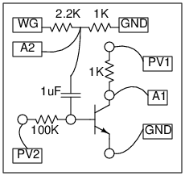

<h2 id="schematic">Schematic</h2>
<hr>
<p></p>
<h2 id="instructions">Instructions</h2>
<hr>
<ul>
	<li>Enable A1 and A2 , set range to 1 volt on both</li>
	<li>Set amplitude of WG to 80 mV</li>
	<li>Set PV1 to 5 volts</li>
	<li>Adjust PV2 to set the base current, deciding the DC operating point</li>
	
</ul>
